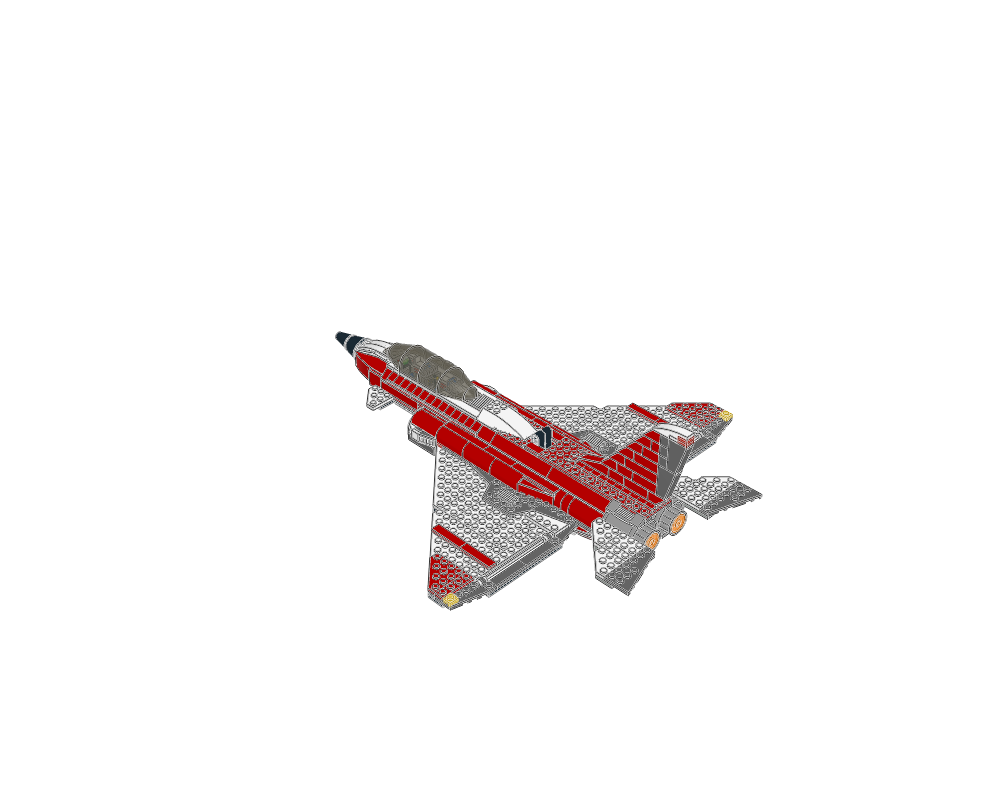
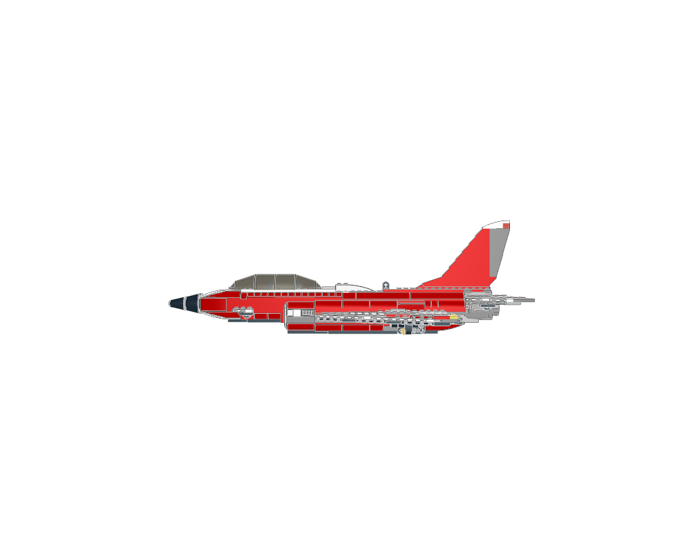
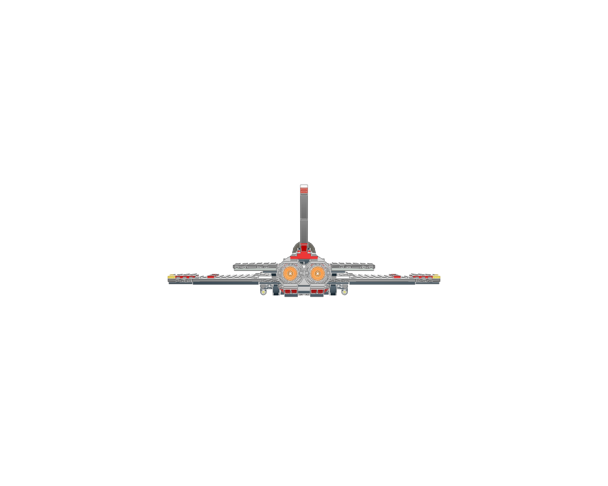
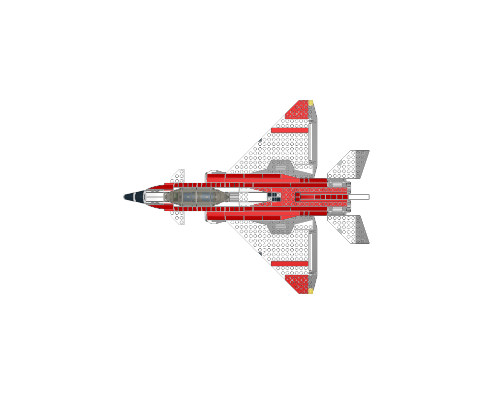
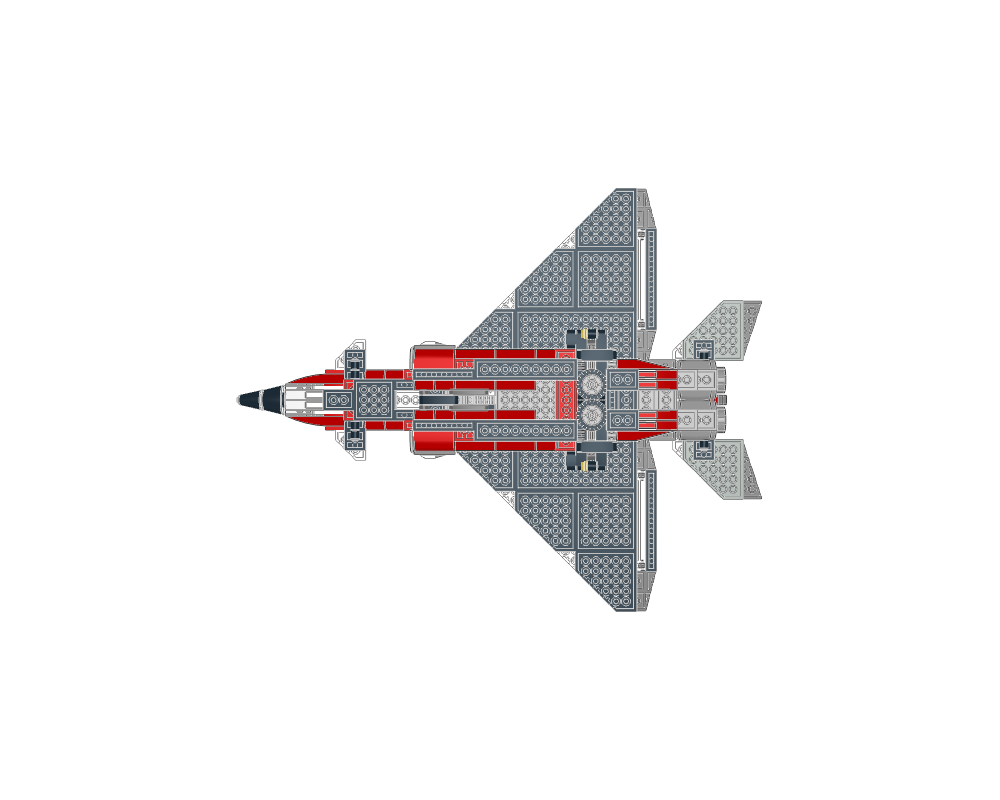
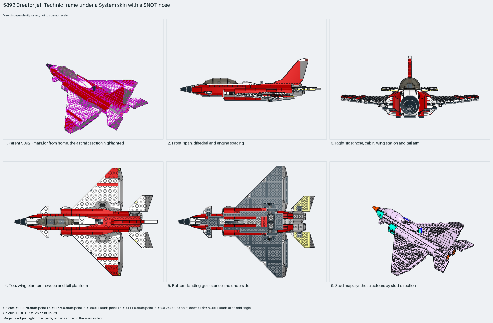

A Creator jet: a Technic-brick spine with pins carries a studs-up System skin, delta plate wings with Technic-brick roots, a SNOT nose with a cone spike, a one-stud slope fin, twin 43121 engines side by side at the tail and a retracting nose gear. Measured: span 41 studs, length 50, height 17, 524 parts, 16% Technic.
construction
524 parts in 9 steps across 9 sections: `Bottom section` and `Center support` (Technic bricks and plates as the spine), `Nose gear` with its `Switch arm`, `Nose section` (the SNOT nose with the instrument slope), `Left wing` and `Right wing` (mirrored plate deltas), `Tail fin`, plus the 89762 canopy, 54200 cheese slopes along the fuselage edges and the two 43121 engines in the root.
interfaces
429 studs up, 84 sideways (nose wedges and fuselage sides), 7 angled. The wings pin to the spine through their 1×2 Technic bricks; the nose stacks on the front plates; the fin's base plate sits on the spine; the canopy sits on the cockpit rim.
parent context
`5892 - main.ldr` places it at the origin with the identity matrix; the nose points −X, so LeoCAD's front view shows the side.
reuse notes
Use it as the template for a mid-size jet: length 1.2× span, delta wings two plates thick, engines at the rear, fin one stud thick. Build the Technic spine first, then hang wings, nose and fin on it before closing the skin.

home

front

right

top

bottom

mosaic
Sections to study separately
Use manual prepare on a selected source section to create its build pages.